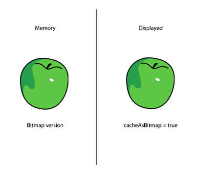
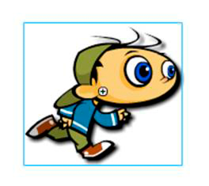

Use the bitmap caching feature for complex
vector content, when appropriate.
A good optimization can be made by using the bitmap caching feature.
This feature caches a vector object, renders it as a bitmap internally,
and uses that bitmap for rendering. The result can be a huge performance
boost for rendering, but it can require a significant amount of
memory. Use the bitmap caching feature for complex vector content,
like complex gradients or text.
Turning on bitmap caching for an animated object that contains
complex vector graphics (such as text or gradients) improves performance.
However, if bitmap caching is enabled on a display object such as
a movie clip that has its timeline playing, you get the opposite
result. On each frame, the runtime must update the cached bitmap
and then redraw it onscreen, which requires many CPU cycles. The
bitmap caching feature is an advantage only when the cached bitmap
can be generated once and then used without the need to update it.
If you turn on bitmap caching for a Sprite object, the object
can be moved without causing the runtime to regenerate the cached
bitmap. Changing the
x
and
y
properties
of the object does not cause regeneration. However, any attempt
to rotate it, scale it, or change its alpha value causes the runtime
to regenerate the cached bitmap, and as a result, hurts performance.
Note:
The
DisplayObject.cacheAsBitmapMatrix
property
available in AIR and the Packager for iPhone does not have this
limitation. By using the
cacheAsBitmapMatrix
property,
you can rotate, scale, skew, and change the alpha value of a display
object without triggering bitmap regeneration.
A cached bitmap can use more memory than a regular movie clip
instance. For example, if the movie clip on the Stage is 250 x 250
pixels, when cached it uses about 250 KB, instead of 1 KB uncached.
The following example involves a Sprite object that contains
an image of an apple. The following class is attached to the apple
symbol:
package org.bytearray.bitmap
{
import flash.display.Sprite;
import flash.events.Event;
public class Apple extends Sprite
{
private var destinationX:Number;
private var destinationY:Number;
public function Apple ()
{
addEventListener(Event.ADDED_TO_STAGE,activation);
addEventListener(Event.REMOVED_FROM_STAGE,deactivation);
}
private function activation(e:Event):void
{
initPos();
addEventListener (Event.ENTER_FRAME,handleMovement);
}
private function deactivation(e:Event):void
{
removeEventListener(Event.ENTER_FRAME,handleMovement);
}
private function initPos():void
{
destinationX = Math.random()*(stage.stageWidth - (width>>1));
destinationY = Math.random()*(stage.stageHeight - (height>>1));
}
private function handleMovement(e:Event):void
{
x -= (x - destinationX)*.5;
y -= (y - destinationY)*.5;
if (Math.abs(x - destinationX) < 1 && Math.abs(y - destinationY) < 1)
initPos();
}
}
}
The code uses the Sprite class instead of the MovieClip class,
because a timeline is not needed for each apple. For best performance,
use the most lightweight object possible. Next, the class is instantiated
with the following code:
import org.bytearray.bitmap.Apple;
stage.addEventListener(MouseEvent.CLICK,createApples);
stage.addEventListener(KeyboardEvent.KEY_DOWN,cacheApples);
const MAX_NUM:int = 100;
var apple:Apple;
var holder:Sprite = new Sprite();
addChild(holder);
function createApples(e:MouseEvent):void
{
for (var i:int = 0; i< MAX_NUM; i++)
{
apple = new Apple();
holder.addChild(apple);
}
}
function cacheApples(e:KeyboardEvent):void
{
if (e.keyCode == 67)
{
var lng:int = holder.numChildren;
for (var i:int = 0; i < lng; i++)
{
apple = holder.getChildAt (i) as Apple;
apple.cacheAsBitmap = Boolean(!apple.cacheAsBitmap);
}
}
}
When the user clicks the mouse, the apples are created without
caching. When the user presses the C key (keycode 67), the apple
vectors are cached as bitmaps and shown onscreen. This technique
greatly improves rendering performance, both on the desktop and
on mobile devices, when the CPU is slow.
However, although using the bitmap caching feature improves rendering
performance, it can quickly consume large amounts of memory. As
soon as an object is cached, its surface is captured as a transparent
bitmap and stored in memory, as shown in the following diagram:

Object and its surface bitmap stored in memory
Flash Player 10.1 and AIR 2.5 optimize the use of memory by taking
the same approach as described in the
Filters and dynamic bitmap unloading
. If a cached display object
is hidden or offscreen, its bitmap in memory is freed when unused for
a while.
Note:
If the display object’s
opaqueBackground
property
is set to a specific color, the runtime considers the display object
to be opaque. When used with the
cacheAsBitmap
property,
the runtime creates a non-transparent 32-bit bitmap in memory. The
alpha channel is set to 0xFF, which improves performance, because
no transparency is required to draw the bitmap onscreen. Avoiding
alpha blending makes rendering even faster. If the current screen
depth is limited to 16 bits, then the bitmap in memory is stored
as a 16-bit image. Using the
opaqueBackground
property
does not implicitly activate bitmap caching.
To save memory, use the
cacheAsBitmap
property
and activate it on each display object rather than on the container.
Activating bitmap caching on the container makes the final bitmap
much larger in memory, creating a transparent bitmap with dimensions
of 211 x 279 pixels. The image uses around 229 KB of memory:
In addition, by caching the container, you risk having the whole
bitmap updated in memory, if any apple starts to move on a frame.
Activating the bitmap caching on the individual instances results
in caching six 7-KB surfaces in memory, which uses only 42 KB of
memory:
Accessing each apple instance through the display list and calling
the
getChildAt()
method stores references in a
Vector object for easier access:
import org.bytearray.bitmap.Apple;
stage.addEventListener(KeyboardEvent.KEY_DOWN, cacheApples);
const MAX_NUM:int = 200;
var apple:Apple;
var holder:Sprite = new Sprite();
addChild(holder);
var holderVector:Vector.<Apple> = new Vector.<Apple>(MAX_NUM, true);
for (var i:int = 0; i< MAX_NUM; i++)
{
apple = new Apple();
holder.addChild(apple);
holderVector[i] = apple;
}
function cacheApples(e:KeyboardEvent):void
{
if (e.keyCode == 67)
{
var lng:int = holderVector.length
for (var i:int = 0; i < lng; i++)
{
apple = holderVector[i];
apple.cacheAsBitmap = Boolean(!apple.cacheAsBitmap);
}
}
}
Keep in mind that bitmap caching improves rendering if the cached
content is not rotated, scaled, or changed on each frame. However,
for any transformation other than translation on the x- and y-axes,
rendering is not improved. In these cases, Flash Player updates
the cached bitmap copy for every transformation occurring on the
display object. Updating the cached copy can result in high CPU usage,
slow performance, and high battery usage. Again, the
cacheAsBitmapMatrix
property
in AIR or the Packager for iPhone does not have this limitation.
The following code changes the alpha value in the movement method,
which changes the opacity of the apple on every frame:
private function handleMovement(e:Event):void
{
alpha = Math.random();
x -= (x - destinationX)*.5;
y -= (y - destinationY)*.5;
if (Math.abs(x - destinationX) < 1 && Math.abs(y - destinationY) < 1)
initPos();
}
Using bitmap caching causes a performance slowdown. Changing
the alpha value forces the runtime to update the cached bitmap in
memory whenever the alpha value is modified.
Filters rely on bitmaps that are updated whenever the playhead
of a cached movie clip moves. So, using a filter automatically sets
the
cacheAsBitmap
property to
true
.
The following figure illustrates an animated movie clip:
Avoid using filters on animated content, because it can cause
performance problems. In the following figure, the designer adds
a drop shadow filter:

Animated movie clip with drop shadow filter
As a result, if the timeline inside the movie clip is playing,
the bitmap must be regenerated. The bitmap must also be regenerated
if the content is modified in any way other than a simple x or y
transformation. Each frame forces the runtime to redraw the bitmap,
which requires more CPU resources, causes poor performance, and
consumes more battery life.
Paul Trani provides examples of using Flash Professional and
ActionScript to optimize graphics using bitmaps in the following
training videos: